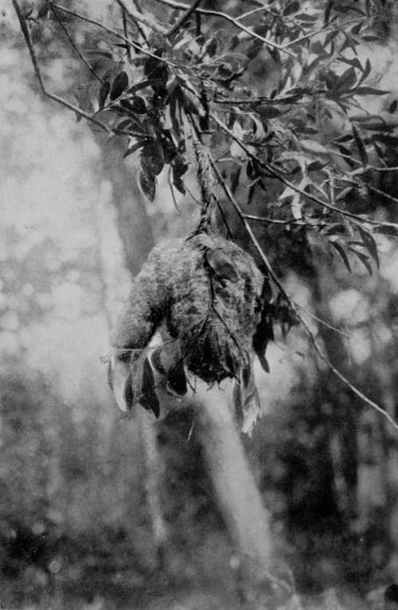
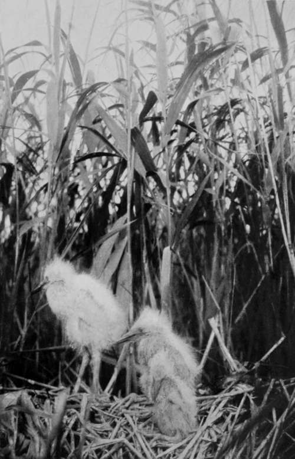

The Search After The Great White Heron. Part 8
Description
This section is from the book "Bird-Hunting Through Wild Europe", by R. B. Lodge. Also available from Amazon: Bird-Hunting Through Wild Europe.
The Search After The Great White Heron. Part 8
At last, one day (May 27), after many disappointments such as I have described, and many failures, I succeeded in finding a nesting colony of Ardea alba. I had been wading all day searching several thick reed-beds. The day was a very hot one, and I was thoroughly exhausted and done up, so much so that several times I had been obliged to sit down in the water and rest on clumps of reeds. Hardly able to drag myself along, I was on my way slowly back to the boat where I had left wine and food, when suddenly the unmistakable grunting of breeding Herons attracted my attention. On firing my revolver up got several Common Herons, but with them were some Great White Herons. Fatigue, hunger, and thirst, were all forgotten, and I plunged again into the reeds with renewed strength. The water was waist-deep-sometimes over-but luckily the bottom was fairly firm. Each step required the exercise of my whole strength and weight to force a passage through the thick reeds. For over an hour this went on, until at last a nest was found high up in the reeds, made like a Purple Heron's nest, in which were lying four pale-blue eggs.
But this alone was insufficient. I had seen Grey Herons rise from the reeds, and the eggs of the two species are so much alike that further identification was necessary, if only for my own satisfaction. Crouching in the reeds at a little distance I waited until a pair of veritable Great White Herons hovered over the nest, preparing to alight.
At last, after a whole month's search in Montenegro and Albania! Only those who have experienced the difficulties, uncertainties, and disappointments of such a search can sympathize with the relief I felt at having finally succeeded.
Then I went back to the boat for some much-needed refreshments, and received the compliments and congratulations of Djouraschkovitch, who confessed that he would have given up the search long ago as hopeless. During my absence he had found the beautiful nest of a Penduline Tit suspended from the extreme tip of a willow twig.
Back we went with the camera so as to lose no time in obtaining a photograph. Djouraschkovitch, being anxious to see the nest, accompanied me into the reeds. It will give some idea of the difficulty of birds'-nesting in these places when I say that for two hours we searched in vain for it, though I thought I had left a plain track of broken reeds straight to the spot. But, no ; we lost ourselves completely, and not only could we not find the nest, but we had considerable difficulty in finding our way out again.
Hanging Nest Of Penduline Tit
When once we had entered the water the reeds towered over our heads to the height of six or eight feet, and it was impossible to tell in which direction we were going. High mountains were on three sides of us, but it was impossible to see them, or, in fact, to see anything more than a yard away.
We had to leave the nest for that day, and it was only after two hours' more hard work on the next day that we succeeded in finding it again. By that time one of the four eggs had hatched, and the other three were on the point of doing the same. It was only by a very prompt and rough surgical operation with my knife that I was able to save them.
Not far from this nest we then found more than a dozen nests of the Common Heron and the Great White Heron. Each of these contained young birds, the Common Herons nearly fledged, the White Herons in all stages, from a few days to a couple of weeks or more. There were no more eggs, so that I was only just in the nick of time to obtain any at all; another hour's delay and I should have been too late. On being approached, the young Herons leave their nest and retire into the reeds, sometimes going to some distance, and returning when the danger has passed. On these occasions they pull themselves along with their feet-the toes of which have considerable grasping powers-by their mandibles, and by hitching their chins over the reeds, using the beak as a hook.
Both nests and eggs appeared to be smaller than those of A. cinerea. The nests were sometimes raised about two or three feet above the water, others were nearly flush. The birds themselves were quieter than cinerea or purpurea, and I only heard low croakings while waiting at the nests.
But they were exceedingly shy. In vain I tried every dodge and artifice I could think of. One day I spent hiding at a little distance with reeds tied all round my waist, with a long string on to the shutter of the camera. For hours I stood in the water thus hidden, swaying backwards and forwards in the wind like the other reeds, till I almost began to think I was a reed myself. But the birds either saw the hidden camera, or detected me through my disguise, and obstinately refused to alight.
Then I tried the electric camera, and this did go off several times. It was lucky, however, that I did not altogether trust to this plan, which has its advantages for very shy birds, but at the same time is very tricky and unreliable, for it turned out afterwards that for some reason or other all these exposures were failures.
Young Great White Herons
Then I used an empty nest as a hiding-place. It was at a good height up, and, by burrowing a hole in the mud with my feet, so as to make it rather deeper, I found I could stand behind and partly under it and be pretty well hidden, and at the same time get a good, clear view of a likely nest opposite.
Here, then, I remained almost motionless for two entire days of ten hours each day, from eight o'clock in the morning until six o'clock in the evening. I had some food in my shoulder-bag, for my pockets were full of water, and munched hard-boiled eggs and dry bread when I was hungry. The only exercise I could take to keep the circulation going in my legs was working with my feet to deepen the hole I was standing in. The water was up to my waist, and to make things still more unpleasant, the leeches found out some holes in my breeches made by the reeds, and I was losing blood all the time ; there were several also inside my boots.
Continue to:
- prev: The Search After The Great White Heron. Part 7
- Table of Contents
- next: The Search After The Great White Heron. Part 9